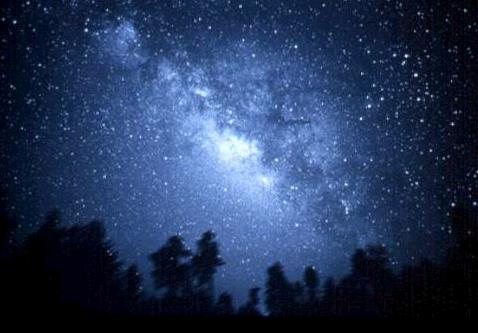

La
Galaxia
A finales del siglo XVIII, William Herschel construyó los mayores telescopios de su época y los utilizó para explorar los cielos. No sólo descubrió el planeta Urano, sino también cantidad de satélites y estrellas dobles, además de innumerables cúmulos de estrellas y nebulosas. Sus recuentos de estrellas en diferentes regiones de los cielos convencieron a Herschel de que el Sol es sólo una más de una amplia nube de estrellas dispuestas en forma de disco. Véase Vía Láctea.
Modernas investigaciones confirman este cuadro, excepto que hoy se sabe que el Sistema Solar está situado a unos tres quintos del radio galáctico desde su centro. El nombre de Vía Láctea suele aplicarse a todo el sistema o galaxia, también conocida como la Galaxia. Las estrellas del sistema están todas unidas por la gravedad y giran alrededor de un centro distante. En el estudio de la estructura de la Vía Láctea es de fundamental importancia el conocimiento de la distancia a la que se encuentran las estrellas. El método de paralaje para determinar estas distancias sólo se puede aplicar a unos pocos miles de las estrellas más próximas. Hay una clase especial de estrellas, las variables cefeidas, que varían de brillo en periodos que dependen de su intensidad intrínseca. La comparación del brillo observado en una estrella de este tipo con el brillo intrínseco conocido nos proporciona un medio de determinar su distancia. Siguiendo el descubrimiento de Henrietta Swan Leavitt de la relación entre el periodo y la luminosidad, Harlow Shapley utilizó las variables cefeidas, esparcidas por toda la Vía Láctea, para medir su tamaño. Un rayo de luz a una velocidad de unos 300.000 km/s necesitaría 400.000 años para atravesar la Vía Láctea de extremo a extremo de su halo (se describe más abajo). La espiral visible mide unos 100.000 años luz. En conjunto, la Vía Láctea está compuesta por unos 100.000 millones de estrellas que giran alrededor de un centro común. El Sol, situado a unos 30.000 años luz del centro de la Vía Láctea, viaja a una velocidad de unos 210 km/s y completa una revolución entera cada 200 millones de años.
La
Vía Láctea incluye gran cantidad de polvo y partículas
de gas esparcidas entre las estrellas. Esta materia interestelar intercepta
la luz visible emitida por estrellas distantes, de modo que los observadores
en la Tierra no pueden contemplar con detalle las regiones lejanas de la Vía
Láctea. Se inició una nueva rama de la astronomía cuando
el ingeniero electrónico estadounidense Karl G. Jansky descubrió
en 1932 que las radioondas se emitían desde la Vía Láctea.
Un estudio posterior situó parte de esta radiación en la materia
interestelar y parte en fuentes discretas, denominadas al principio radioestrellas.
Las radioondas emitidas por las regiones distantes de la Vía Láctea
pueden penetrar la materia interestelar opaca a la luz visible y permitir de
esta forma a los astrónomos observar regiones ocultas a los instrumentos
ópticos. Estas observaciones han revelado que la Vía Láctea
es una galaxia espiral con un engrosamiento central de estrellas viejas, un
disco exterior de estrellas tanto viejas como jóvenes y calientes que
constituyen los brazos espirales y un gran halo de estrellas débiles.
El núcleo de la Vía Láctea ha sido hasta hace poco una región misteriosa, oculta a la vista por oscuras nubes de polvo interestelar. Los astrónomos obtuvieron la primera descripción detallada en 1983, cuando fue lanzado el Satélite de Astronomía Infrarroja (IRAS). Liberados de los efectos atmosféricos de la Tierra, los sensores del IRAS grabaron con un detalle sin precedentes las posiciones y las formas de innumerables fuentes de energía infrarroja que ocupan el corazón de la Vía Láctea. Entre éstas se descubrió un objeto macizo que no era una estrella y demasiado compacto para ser un cúmulo de estrellas; se pensó que podría ser un agujero negro.
Vía Láctea
1.
Introducción
Vía Láctea, también llamada la Galaxia, agrupamiento de estrellas con forma de disco, que incluye al Sol y a su Sistema Solar. Para un observador terrestre, el disco de la Galaxia aparece como una banda débilmente luminosa que se puede observar de noche extendiéndose a través del cielo, sobre todo en las noches de verano claras y sin luna. Antiguamente a esta banda se la llamó Vía Láctea (también Camino de Santiago), nombre que en la actualidad hace referencia a toda la galaxia. La apariencia difusa de esta banda es el resultado de la luz combinada de estrellas demasiado lejanas para poder distinguirlas por separado a simple vista. Las estrellas individuales que vemos en el cielo son aquellas de la Galaxia que están lo suficientemente cerca del Sistema Solar para distinguirlas por separado.
Vía Láctea
El Sistema Solar se encuentra en uno de los brazos espirales de la galaxia con
forma de disco llamada Vía Láctea. Esta fotografía muestra
el centro de la Vía Láctea, a 30.000 años luz. En la imagen
se ven cúmulos de estrellas brillantes con áreas oscuras de polvo
y gas.Morton-Milon/Science Source/Photo Researchers, Inc.
Ampliar
Galaxia espiral Las galaxias
espirales como la Vía Láctea contienen millones de estrellas que
interactúan unas con otras a través de la atracción gravitatoria.
El telescopio espacial Hubble, un poderoso instrumento que gira alrededor de
la Tierra, captó esta imagen de las regiones centrales de una galaxia
espiral muy semejante a la Vía Láctea.NASA/Liaison Agency
Ampliar
La Vía Láctea se extiende a través de las constelaciones
Perseo, Casiopea y Cefeo. En la región de la Cruz del Norte, que forma
parte de Cisne, se divide en dos corrientes: la corriente occidental que brilla
cuando atraviesa la Cruz del Norte, palidece cerca de Ofiuco, a causa de las
nubes de polvo, y aparece de nuevo en Escorpio; y la corriente oriental, que
es más brillante cuando pasa por el sur a través del Escudo y
Sagitario. La parte más brillante de la Vía Láctea se extiende
desde la constelación del Escudo a Escorpio, a través de Sagitario.
El centro galáctico está en dirección a Sagitario y se
encuentra a unos 26.000 años luz del Sol.
2. Estructura
Se ha descubierto que la Vía Láctea es una gran galaxia espiral, con varios brazos espirales que se enroscan alrededor de un núcleo central de un grosor de unos 10.000 años luz. Las estrellas del núcleo central están más agrupadas que las de los brazos, donde se han encontrado más nubes interestelares de polvo y gas. El diámetro del disco es de unos 100.000 años luz. Está rodeado por una nube de hidrógeno, deformada y festoneada en sus extremos, rodeada a su vez por un halo esférico y ligeramente aplastado que contiene muchos cúmulos globulares de estrellas, que se encuentran principalmente encima o debajo del disco. Este halo puede llegar a ser dos veces más ancho que el disco en sí. Además, estudios realizados sobre los movimientos galácticos sugieren que el sistema de la Vía Láctea contiene más de 2 billones de veces la masa que contiene el Sol, mucha más materia de la que se considera que tiene el disco conocido y los cúmulos concomitantes. Sin embargo, los astrónomos han especulado con la idea de que el sistema conocido de la Vía Láctea esté rodeado por una corona mucho mayor de materia no detectada. Otra especulación reciente supone que la Vía Láctea es una galaxia espiral barrada.
3. Tipos de estrellas
La Vía Láctea contiene tanto estrellas de las llamadas de tipo I, que son estrellas azules y brillantes, como estrellas del tipo II, gigantes rojas. La región central de la Vía Láctea y el halo están compuestos por estrellas del tipo II. La mayor parte de la región se oculta tras nubes de polvo que impiden la observación visual. La radiación de la región central se ha registrado por medio de mecanismos como células fotoeléctricas, filtros infrarrojos y radiotelescopios. Estos estudios indican la presencia de objetos compactos cerca del centro, posiblemente restos de estrellas o un enorme agujero negro. Esta teoría de la existencia de un agujero negro en el centro de la Vía Láctea parece confirmarse tras las observaciones realizadas por un equipo de astrónomos estadounidenses con el telescopio espacial de rayos X Chandra en octubre de 2000, y cuyos resultados fueron publicados en septiembre de 2001.
Rodeando la región central hay un disco bastante achatado que comprende estrellas de ambos tipos, I y II; los miembros más brillantes de la primera categoría son luminosos, supergigantes azules. Incrustados en el disco y surgiendo de los lados opuestos de la región central, están los brazos espirales, que contienen una mayoría de la población I, junto con mucho polvo interestelar y gas. Un brazo pasa por las proximidades del Sol e incluye a la gran nebulosa de Orión.
4. Rotación

La Vía Láctea gira alrededor de un eje que une los polos galácticos. Contemplada desde el polo norte galáctico, la rotación de la Vía Láctea se produce en el sentido de las agujas del reloj, arrastrando los brazos espirales. El periodo de rotación aumenta cuando disminuye la distancia desde el centro del sistema galáctico. En las proximidades del Sistema Solar, el periodo de rotación es de algo más de 200 millones de años luz. La velocidad del Sistema Solar debido a la rotación galáctica es de unos 270 kilómetros por segundo.